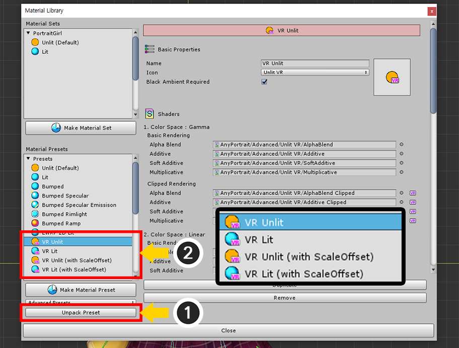
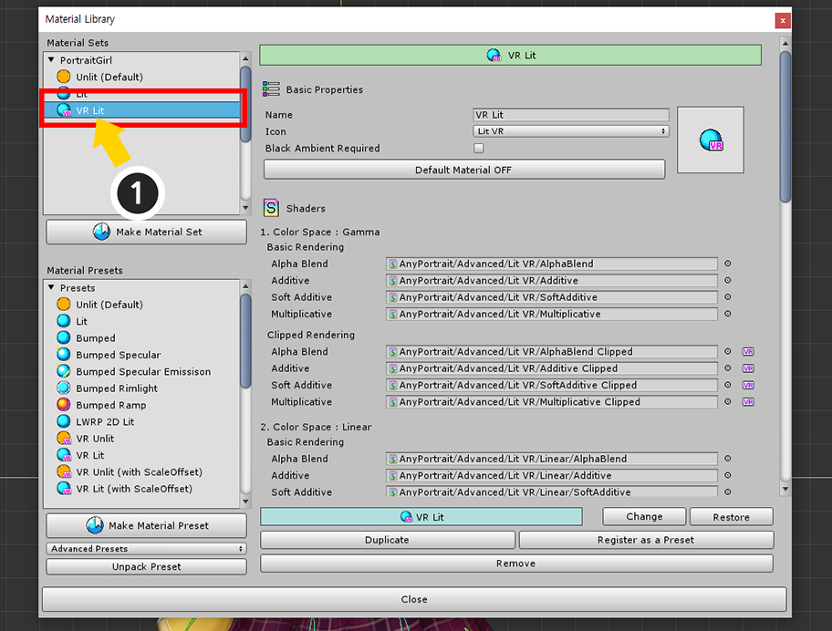
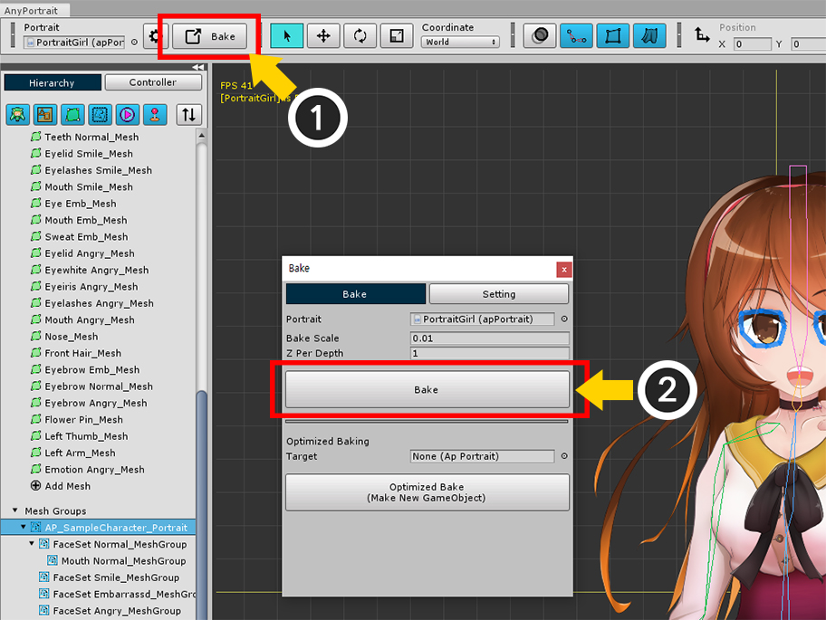
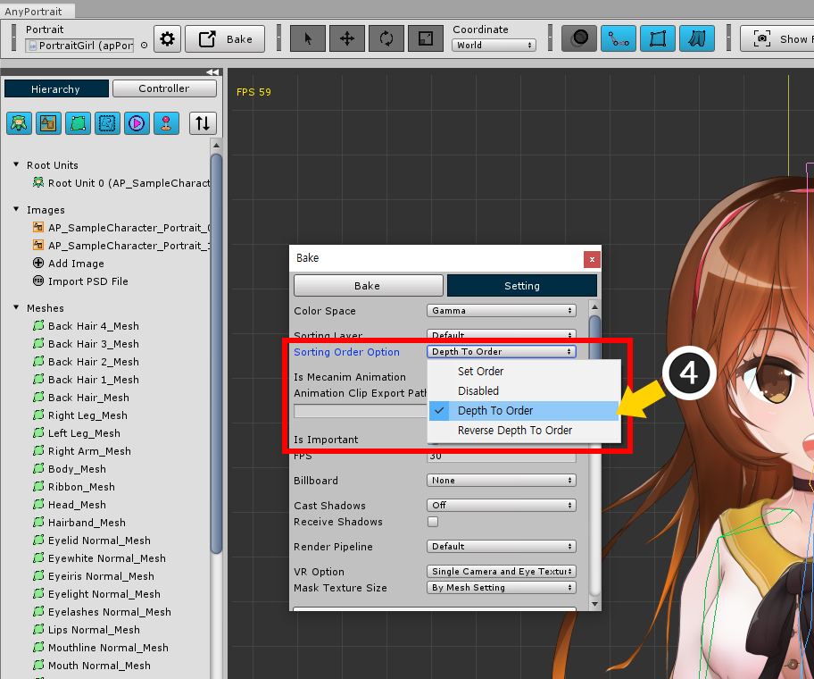
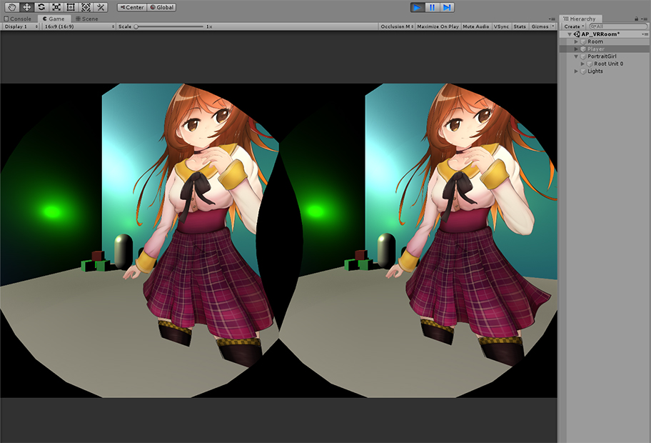
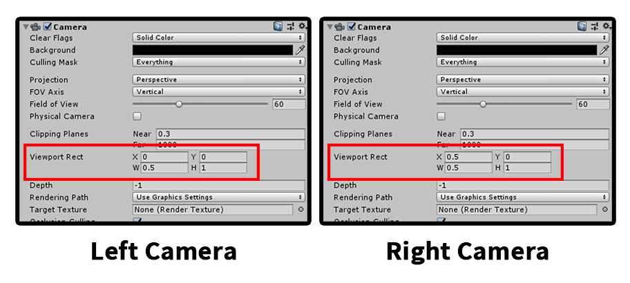
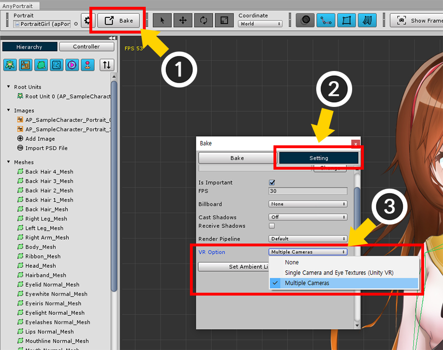

AnyPortrait > 메뉴얼 > VR로 빌드하기
VR로 빌드하기
1.2.0
VR (Virtual Reality)은 주로 HMD (Head-Mounted Display)라 불리는 기기를 이용하여 실감나게 게임을 즐기는 기술입니다.
(넓은 의미에서 VR은 가상 현실을 즐기는 모든 기법과 개념을 포함합니다만 여기서는 현재 시장의 VR과 HMD에 대해서만 다룹니다.)
유니티도 여타 게임 엔진과 마찬가지로 VR을 지원하므로, 여러분은 모바일, PC, 콘솔을 대상으로 VR 빌드를 할 수 있습니다.
AnyPortrait는 2D 캐릭터를 만드는 에디터이므로 VR과 다소 거리가 있었던 것이 사실입니다.
하지만 많은 사용자들의 요청에 따라서 유니티의 VR과 연동하는 기능을 v1.2.0부터 지원합니다.
이 기능을 설명하기에 앞서서 다음의 링크의 설명을 먼저 보시는 것을 권장합니다.
VR 기능 설명 페이지 (유니티 공식 페이지)
재질 라이브러리
참고.
VR 빌드 방식은 유니티의 버전에 따라서 조금씩 차이가 있으며, 대상 기기에 따라서도 차이가 있기 때문에,
경우에 따라서는 AnyPortrait의 VR 기능이 완벽히 지원되지 않을 수 있습니다.
저희에게 사용하시는 유니티 엔진의 버전과 VR 기기를 포함하여 발생한 문제점을 알려주시면 도움을 드리겠습니다.
이 페이지는 Unity 2019.2를 기준으로 작성되었으며, 버전에 따라 다소 차이가 있을 수 있습니다.
VR 재질을 적용하여 렌더링하기

VR로 빌드하기 위한 씬을 만들었습니다.
3D 오브젝트를 배치하여 작은 방을 만들었으며, 여러개의 Point Light를 배치한 상태입니다.
이 공간에 AnyPortrait로 제작한 캐릭터를 가운데 위치시켰습니다.

Project Settings > Player를 선택하거나 Build Settings > Player Settings를 엽니다.
(1) XR Settings 항목에서 Virtual Reality Supported 속성을 켭니다.
(2) "+" 버튼을 눌러서 빌드하고자 하는 VR 환경을 추가하고, 테스트를 위해서 Mock HMD도 추가합니다.
(위 스크린샷은 PC 환경에서의 화면이며, 모바일이나 콘솔 플랫폼에서는 다른 빌드 옵션이 나타납니다.)

Stereo Rendering Mode를 선택합니다.
Multi Pass와 Single Pass는 VR 렌더링 방식에 내부적인 차이가 있습니다.
AnyPortrait는 위 방식들을 모두 지원하지만, 이 차이점에 따라서 기기에서 테스트를 해야할 필요가 있습니다.
특히 아래의 설명 중 "ScaleOffset" 이슈에 대해서 확인해보세요.

Mock HMD가 등록된 상태에서는 VR 렌더링을 에디터에서 확인해볼 수 있습니다.
Game 탭에서 위와 같이 "Occlusion Mesh"를 선택하면 가상으로 HMD에서 보는 것과 같이 시뮬레이션된 화면이 보여집니다.

게임을 실행하면 대체로 큰 문제없이 렌더링이 되지만, "클리핑 메시"가 정상적으로 렌더링되지 않는 것을 볼 수 있습니다.
AnyPortrait의 VR 지원의 가장 큰 이슈는 "클리핑 메시가 VR의 두개의 화면에서 정상적으로 보여지는가" 입니다.
다음의 방법에 따라서 이 문제를 해결할 수 있습니다.

AnyPortrait 에디터를 엽니다.
(1) Material Library 버튼을 누릅니다.
(2) "VR Presets"을 선택합니다.

(1) Unpack Preset 버튼을 누르면 선택된 "VR Presets"가 설치됩니다.
이때, "재질 라이브러리를 재시작해야한다"는 메시지와 함께 재질 라이브러리가 종료됩니다.
(2) 재질 라이브러리를 재시작하면 4개의 VR용 재질 프리셋이 추가된 것을 볼 수 있습니다.
이 재질 프리셋들은 다음과 같습니다.
- VR Unlit : 빛이 없는 환경에서 원본 이미지의 색상 그대로 렌더링하는 VR용 재질 프리셋
- VR Lit : 빛이 있는 환경에서 라이팅이 적용되어 렌더링되는 VR용 재질 프리셋
- VR Unlit / VR Lit (with ScaleOffset) : Single Pass의 환경에서 사용되는 VR용 재질 프리셋
여기서 주의할 점이 있습니다.
Scale Offset이 적용된 재질은 원래 Single Pass 환경에서 사용되어야 하는 재질 프리셋입니다.
이 재질의 쉐이더들은 유니티의 레퍼런스에 따라 Scale Offset이라는 Single Pass용 변수와 함께 별도의 수식이 적용되었습니다.
그렇지만, 저희의 테스트에서는 Single Pass 환경에서도 "Scale Offset을 사용하지 않는 것"이 오히려 정상적으로 렌더링이 되었습니다.
따라서 일단 Scale Offset을 사용하지 않는 재질을 이용하여 테스트를 해보시고, 만약 문제가 생긴 경우에 한하여 Scale Offset이 적용된 재질을 이용해보시길 바랍니다.

(1) Make Material Set 버튼을 누릅니다.
(2) 현재의 씬에 Point Light들이 배치되어 있으므로 VR Lit 프리셋을 선택합니다.
(3) Select 버튼을 누릅니다.

(1) 새로 생성된 재질 세트를 선택합니다.

VR용 재질 세트를 확인해보면, 기존의 재질 세트와 다른 것을 볼 수 있습니다.
기존의 재질 세트는 _MaskTex 프로퍼티를 사용하는 반면, VR용 재질 세트는 _MaskTex_L과 _MaskTex_R의 2개의 프로퍼티를 사용합니다.
이는 각각 양쪽 눈에 해당하는 두번의 렌더링에 대한 마스크 텍스쳐입니다.

(1) Default Material 버튼을 눌러서 기본 재질로 설정합니다.

3D 공간에서 AnyPortrait로 제작된 캐릭터를 위화감없게 배치시키는 좋은 방법은 빌보드를 이용하는 것입니다.
(자세한 내용은 관련 페이지를 참고하세요.)
(1) Bake 버튼을 누릅니다.
(2) Setting 탭을 선택합니다.
(3) Billboard 옵션을 변경합니다. "Billboard" 또는 "Billboard with fixed Up Vector"을 선택합니다.

VR을 설정하는 가장 중요한 단계입니다.
(1) VR Option을 "Single Camera and Eye Textures (Unity VR)"로 변경합니다.
이 옵션은 유니티의 VR 빌드를 이용하는 경우 꼭 선택되어야 합니다.
이 옵션의 각각의 내용은 다음과 같습니다.
- None : VR 빌드를 사용하지 않고, 캐릭터를 렌더링하는 카메라가 1개인 경우 사용됩니다.
- Single Camera and Eye Textures (Unity VR) : 유니티의 VR 빌드를 사용하는 경우 설정되어야 합니다.
- Multiple Cameras : 유니티의 VR 빌드를 사용하지 않고 직접 2개 이상의 카메라를 이용하여 렌더링할 때 이용됩니다.

VR 옵션을 변경하면 "Mask Texture Size" 옵션이 나타납니다.
이 옵션은 클리핑 마스크의 화질과 관련되어 있습니다.
- By Mesh Setting
: 메시 그룹의 설정에서 지정된 메시의 "클리핑 마스크의 텍스쳐 크기"에 따라서 클리핑 마스크가 작성됩니다.
메시의 크기에 따라서 클리핑 마스크의 크기를 조절할 수 있으므로 최적화에 도움이 됩니다.
일반적인 렌더링보다 VR 렌더링의 경우 클리핑 마스크의 화질이 떨어질 수 있으므로 비교적 큰 값의 마스크 텍스쳐의 크기를 이용해야합니다.
- By Eye Texture Setting
: VR의 화질에 관련된 Eye Texture의 크기를 그대로 클리핑 마스크의 크기로 사용합니다.
모든 클리핑 마스크가 화면 크기와 동일하게 마스크를 생성하므로 균일한 화질이 보장됩니다.
VR 빌드 환경 또는 실행 기기에 따라서 Eye Texture의 크기가 다소 작게 생성되는 경우엔 화질이 매우 낮아질 수 있습니다.
어떤 옵션을 사용하셔도 되지만, 추가적인 설명을 위해서 (2) 여기서는 By Mesh Setting을 선택했습니다.

By Mesh Setting을 선택했다면 클리핑 마스크의 텍스쳐 크기를 변경할 필요가 있습니다.
VR에서는 클리핑 마스크의 최적화가 처리되지 않으므로, 텍스쳐의 해상도를 증가시켜야 합니다.
(1) 메시 그룹을 선택합니다.
(2) Setting 탭을 선택합니다.
(3) 클리핑 마스크가 되는 메시를 선택합니다.
(4) Mask Texture Size의 값을 큰 값으로 변경합니다.

이제 Bake를 실행하여 씬에 적용해봅시다.

정상적으로 VR 화면에서도 렌더링이 되는 것을 볼 수 있습니다.
빌보드 옵션을 끄고 렌더링하기
경우에 따라서 빌보드를 이용하지 않은 상태로 VR 공간에 캐릭터를 배치시킬 필요도 있습니다.
이때 가장 문제가 되는 것은 Z-Fighting 문제입니다.
다수의 메시들이 좁은 간격으로 앞뒤로 배치된 AnyPortrait의 구조상, 카메라의 각도가 조금만 바뀌어도 정상적으로 렌더링이 되지 않기 때문입니다.
이때는 Sorting Group을 이용하여 이 문제를 해결할 수 있습니다. (관련 페이지)

먼저, 빌보드 옵션을 해제해봅시다.
(1) Bake 버튼을 누릅니다.
(2) Setting 탭을 선택합니다.
(3) Billboard 옵션을 None으로 변경합니다.

(4) Sorting Order Option을 Depth To Order로 변경합니다.
모든 과정이 끝났으면 Bake를 실행합니다.

Bake를 한 후, 유니티 에디터를 엽니다.
(1) 캐릭터를 선택합니다.
(2) Sorting Group 컴포넌트를 추가합니다.

게임을 실행하면 빌보드가 적용되지 않은 상태에서도 정상적으로 렌더링이 되는 캐릭터를 볼 수 있습니다.
유니티의 VR 설정을 사용하지 않고 VR 화면 만들기
유니티의 VR 기능은 강력하지만, 다른 방법으로도 VR 화면을 만들 수 있습니다.
여러가지 대체 방법들 중에서 "2개의 카메라를 이용하는 방법"이 가장 유용할 것으로 생각됩니다.
AnyPortrait는 2개, 또는 그 이상의 카메라가 배치되었을 때에도 렌더링이 정상적으로 되도록 만드는 옵션을 제공합니다.

Player Settings에서 Virtual Reality Supported를 해제합니다.

기존의 1개의 카메라를 Left, Right에 해당하는 2개의 카메라로 만듭니다.

카메라의 설정입니다.
Viewport Rect를 위와 같이 수정하여 렌더링 영역을 지정할 수 있습니다.
그 외의 설정들은 동일합니다.

2개의 카메라가 각각 왼쪽과 오른쪽의 영역에 렌더링을 하는 것을 볼 수 있습니다.
카메라의 위치와 각도를 수정하면 실제의 시야와 같은 효과를 낼 수 있습니다.

이 방식은 유니티의 VR 기능과 다르게 VR 재질을 필요로 하지 않습니다.
따라서 원래의 재질로 다시 돌려놓아야 합니다.
(1) AnyPortrait 에디터를 열고 Material Library 버튼을 누릅니다.
(2) 원래의 재질인 Lit 재질 세트를 선택합니다. (또는 새로 만들거나 유사한 다른 재질을 선택합니다.)
(3) Default Material 버튼을 눌러서 기본 재질로 선택합니다.

(1) Bake 버튼을 누릅니다.
(2) Setting 탭을 선택합니다.
(3) VR Option의 값을 Multiple Cameras로 변경합니다.
이 옵션은 다수의 카메라로 렌더링을 하는 대부분의 경우에 효과적입니다.

게임을 실행하면 2개의 카메라로 렌더링을 하는 경우에도 정상적으로 렌더링이 되는 것을 볼 수 있습니다.
클리핑 마스크의 해상도와 VR 및 다수의 카메라에 대하여
AnyPortrait는 렌더 텍스쳐(Render Texture)를 이용하여 클리핑 마스크 기법을 구현합니다.
렌더 텍스쳐의 해상도를 높이면 품질이 좋아지지만, 게임의 성능이 하락합니다.
AnyPortrait는 자체적으로 고안된 방식을 이용하여 낮은 해상도의 클리핑 마스크도 꽤 높은 품질의 렌더링 결과를 보여줍니다.
하지만 이 품질 보정 방식은 "1개의 카메라"의 환경에서만 유효합니다.
따라서 그 외의 모든 경우에는 기존보다 높은 해상도의 클리핑 마스크를 생성해야합니다.
이러한 이유로 VR 렌더링 환경에서는 대부분의 경우에서 클리핑 마스크의 품질이 저하됩니다.
클리핑 마스크가 해상도에 비해서 고품질로 보정되는 여부는 다음과 같습니다.
1. 고품질로 보정되는 경우
1개의 Orthographic 방식의 카메라만 존재
1개의 Perspective 방식의 카메라가 있을 때 빌보드가 켜진 경우
다수의 카메라가 같은 위치, 같은 방향을 향하며, 모두 Orthographic이며, 캐릭터의 VR Option이 Multiple Cameras인 경우
2. 보정이 되지 않는 경우
유니티 VR 옵션이 켜진 상태
1의 조건을 만족하지 못하는 모든 경우